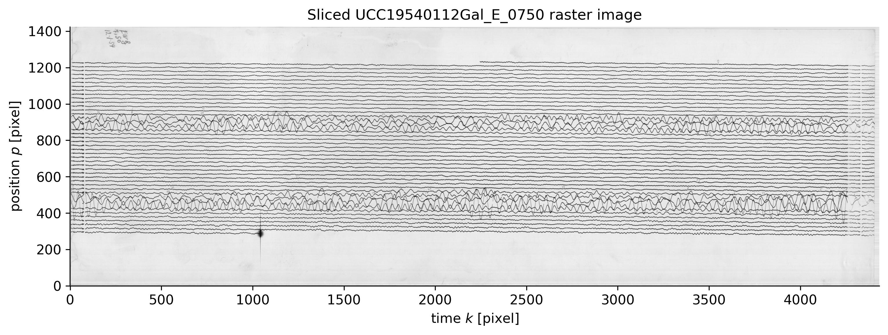
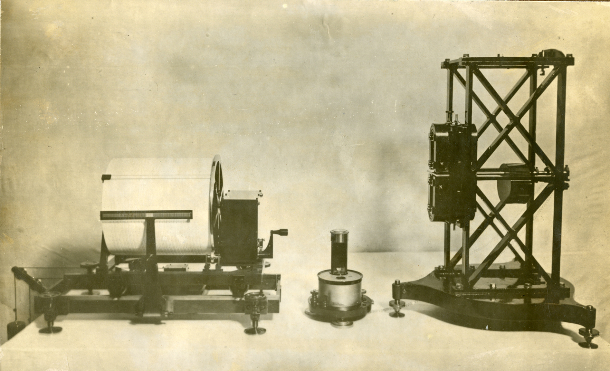
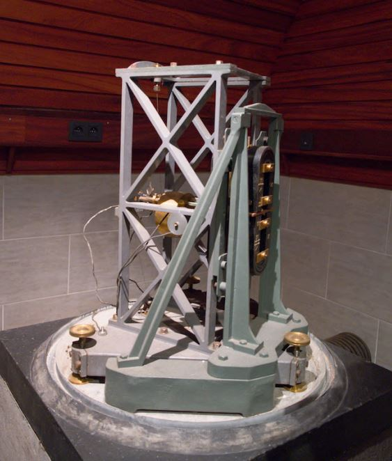
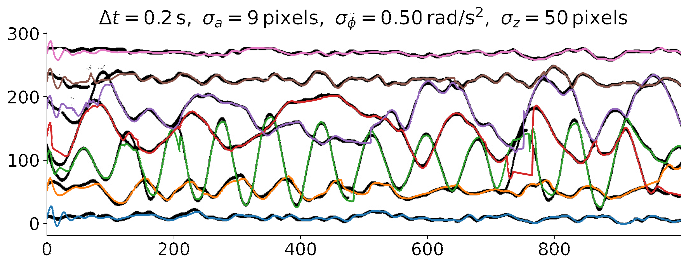

Better overlap handling
On the two-curve synthetic benchmark, the nonlinear HEKF2 reached a 75% success rate, compared with 62.5% for the linear HKF baseline.
Project
This master's thesis turns scanned 20th-century analog seismograms into usable digital signals. The central challenge is not simple denoising: it is recovering the correct trajectory of each trace when high-amplitude events make multiple curves overlap on the paper record.
On the two-curve synthetic benchmark, the nonlinear HEKF2 reached a 75% success rate, compared with 62.5% for the linear HKF baseline.
With five curves, HEKF2 stayed robust much deeper into the overlap range and reached up to 82% success under the thesis evaluation threshold.
On real Uccle seismograms, HEKF2 was able to resume correct tracking after severe multi-curve overlap where the linear tracker tended to drift permanently.
The Royal Observatory of Belgium holds historical Galitzine seismograms recorded on photographic paper. These archives are valuable because they contain earthquakes, teleseisms, and microseisms linked to ocean-wave and storm activity. The scientific value is high, but the format is hostile to automation: the data are scanned images, not numerical time series.
Existing tools can digitize clean traces, but the hardest parts of the archive are the sections that matter most, namely the large-amplitude events where curves cross, touch, or merge. In those regions, a single image column may no longer tell you which dark pixels belong to which signal.

This Uccle Galitzine record shows why the problem is difficult: most of the sheet is easy to follow, but high-amplitude intervals generate dense overlap bands where a naive trace extractor can switch from one signal to another.

The Galitzine system converts ground motion into a light trace on photographic paper through a seismometer, galvanometer, mirror, and rotating drum.

The thesis focuses on records produced by this long-period Galitzine instrument at the Uccle seismic station.
The thesis reframes curve extraction as a recursive multi-target tracking problem. The algorithm moves from left to right across the image, predicts where each trace should be in the next column, detects pixel clusters, matches predictions to measurements, and updates the estimate.
The first tracker is a Hungarian Kalman Filter (HKF): Kalman filtering handles prediction and uncertainty, while Hungarian matching assigns the detected pixel clusters to the predicted traces by minimizing the global assignment cost.
The main improvement is the nonlinear HEKF family. In practice, the thesis explored two variants: HEKF1 was not retained because of numerical instability, and HEKF2 became the effective nonlinear solution. HEKF2 models each trace as an oscillation around a fixed meanline instead of using only generic kinematics.
That extra structure matters. A historical seismic trace is not just “some curve moving smoothly”; it is an oscillatory signal. By encoding amplitude, phase, angular frequency, and meanline behavior, HEKF2 is less likely to jump onto a neighboring trace when overlap occurs.
The linear HKF says: keep going in a smooth way. HEKF2 says: keep going in a smooth way, but also remain an oscillation around the correct baseline. That second constraint is what reduces drift. When three traces overlap, the tracker may temporarily lose a measurement, but if its internal model still looks like the right oscillation around the right meanline, it has a much better chance of recovering once the overlap ends.
The thesis also built a synthetic raster generation pipeline with ground truth curves. That made it possible to measure RMSE and success rate quantitatively rather than only relying on visual inspection.
The headline result is that a physics-aware nonlinear tracker is better suited to this problem than a purely linear one. HEKF2 clearly improved performance on synthetic data, especially in the moderate-to-strong overlap regime that resembles the difficult parts of real historical records.
The figure below is the real-data result highlighted in the report as Figure 4.18. It shows HEKF2 applied to a preprocessed Uccle seismogram. The method still faces hard cases, especially when two traces have similar phase and frequency. Compared with the linear baseline, HEKF2 better limits cascade drift and can recover after some severe overlap regions, but the result is not fully solved yet: visible drifts remain and the thesis explicitly identifies post-processing and further modeling improvements as the next step.

This result is promising, but not perfect. The estimated colored trajectories stay attached to their own meanlines and recover after some difficult overlap zones more reliably than HKF, yet drift can still occur and small gaps can remain between the estimated curve and the exact pixel path. That is why the thesis points to future post-processing and improved modeling as the next step.
The thesis combines image preprocessing, recursive state estimation, Hungarian data association, synthetic benchmark generation, and qualitative plus quantitative evaluation on both synthetic and real seismograms.
The synthetic benchmarks use RMSE-based success thresholds and compare HKF against HEKF2 across different overlap levels, different numbers of curves, and two signal generation modes: sinusoidal and resampled irregular traces.
The main next step identified in the report is a post-processing stage that snaps the estimated trajectory back onto the closest smooth pixel path without reintroducing drift. The report also points to data-based modeling as a promising follow-up, where transition dynamics would be learned from real or synthetic trajectories rather than imposed only through a hand-designed model.
Official UCLouvain record for the master's thesis.
Full report with historical context, methods, evaluation, and conclusions.
Source code and project materials used to develop and evaluate the tracking methods.